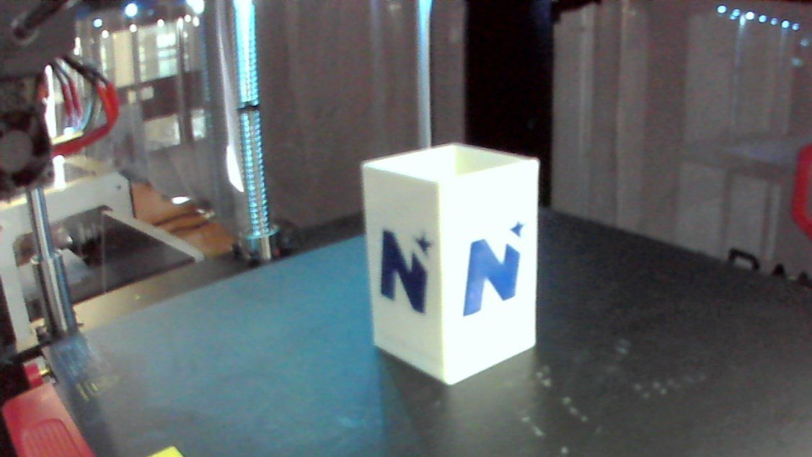
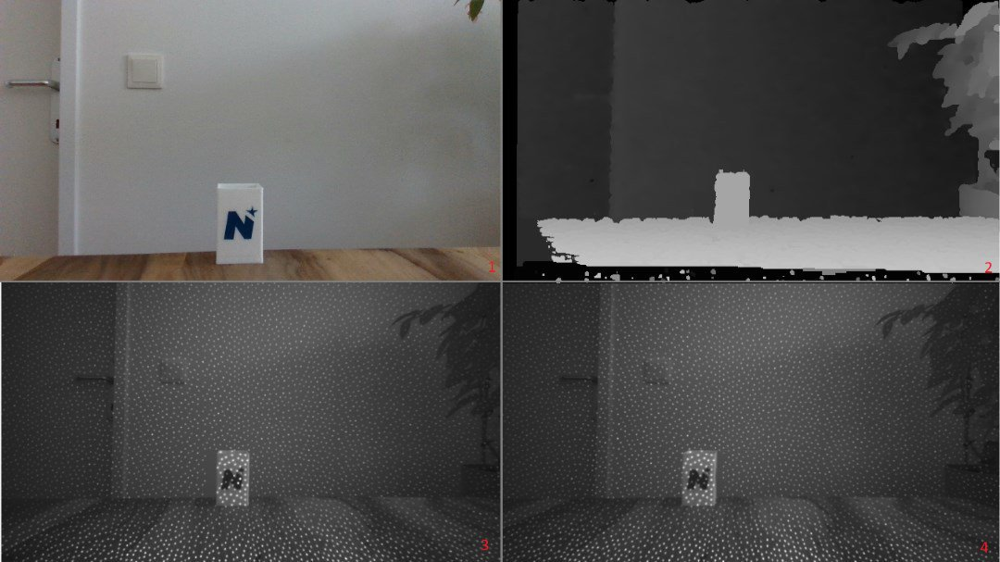
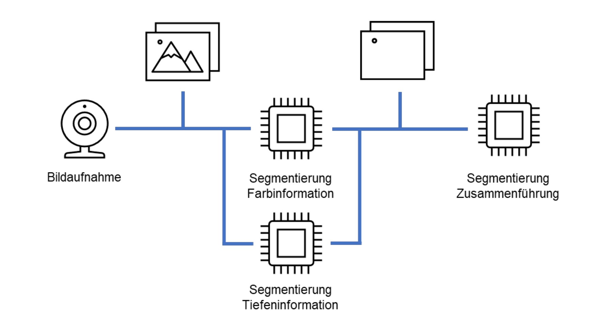
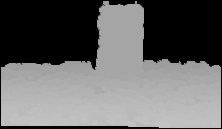
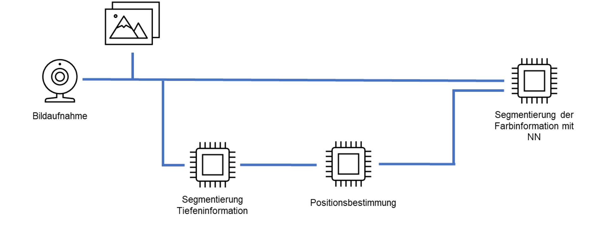
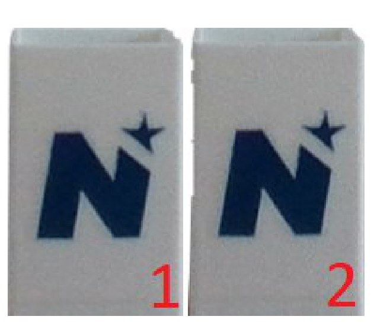
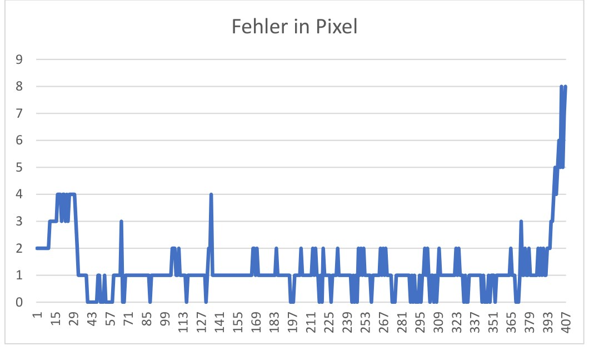

Herausforderung & Problemstellung
Fehler im 3D-Druck, etwa Löcher oder Maßabweichungen, fallen oft erst am Ende eines stundenlangen Drucks auf und kosten Material und Zeit. Ein vorangegangenes Projekt hatte gezeigt, dass reine 2D-Aufnahmen der eingebauten Druckerkamera an ihre Grenzen stoßen. Ziel dieses Projekts war es daher, die Fehlererkennung durch eine 3D-Kamera mit zusätzlichen Tiefeninformationen zu verbessern.
Die Bilder werden von einer Intel RealSense D435i am FDM-Drucker aufgenommen, im Projekt manuell gesammelt und anschließend durch den entstandenen Prozess ausgewertet. Die eigentliche fachliche Hürde lag dabei in der Kamera selbst: sie liefert neben Farb- und Tiefeninformationen eine Vielzahl an Parametern, die erst berücksichtigt und analysiert werden müssen, bevor sich aus den Daten eine belastbare Aussage über den Druckzustand ableiten lässt.
Versuchsaufbau & Werkzeuge
Die eingesetzte Intel RealSense D435 vereint Farbsensor, zwei Imager, einen Infrarotprojektor und den RealSense Vision Prozessor D4 in einem Gehäuse. Farbsensor und Imager arbeiten mit dem Chipsatz OmniVision OV2740 und lösen maximal 1920 × 1080 Pixel auf. Der Infrarotprojektor wirft ein statisches Muster auf die Szene, das der Vision-Prozessor für eine präzisere Tiefenerfassung nutzt. Bei der Aufnahme sind Auflösung und Bildrate nicht frei kombinierbar: nicht jedes Auflösungsformat lässt sich mit jeder Bildrate fahren.
Als Testobjekt diente der Stiftehalter des Landes Niederösterreich. Umgesetzt wurde der Softwareprototyp auf einem Windows-PC in PyCharm, in Python 3.10 mit dem SDK pyrealsense2:
- Python 3.10, gewählt wegen der breiten Bibliotheksverfügbarkeit und der guten Erfahrungen aus vorangegangenen Projekten
- NumPy 1.23.5 und SciPy 1.9.3 für die numerische Auswertung
- OpenCV 4.6 für die Bildmanipulation
- pyrealsense2 2.54.1.5217 als Zugang zu Farb-, Tiefen- und Infrarotstream
- PyYAML für die Konfiguration


Lösungsansatz
Verfolgt wurden zwei Wege, beide aufbauend auf einem Segmentierungsalgorithmus aus dem Vorprojekt PT3, der ursprünglich nur Farbinformationen verarbeitete und hier um die Tiefendaten der RealSense erweitert wurde.
1. Histogrammanalyse mit Tiefeninformation
Am Anfang des Prozesses stehen Farb- und Tiefenbild. Beide werden getrennt über eine Histogrammanalyse segmentiert, die Maximale Histogrammbeschleunigungs-Segmentierung (MHA), woraus zwei Grauwertbilder entstehen, die anschließend zusammengeführt werden. Dafür wurden zwei Wege entwickelt:
- Die ODER-Verknüpfung setzt eine saubere Normalisierung der Wertebereiche voraus. Ihr Schwachpunkt zeigte sich am Druckbett: es liegt tiefenmäßig so nah am Objekt, dass die Segmentierung dort unzureichend bleibt.
- Die UND-Verknüpfung nutzt die Farbsegmentierung, um den Bereich der segmentierten Tiefeninformation auszugliedern, und umgeht damit dieses Problem.
An den Objekträndern brachte die Kombination kaum Verbesserung, beim Schließen von Lücken in der Maske dagegen einen klaren Vorteil: Löcher im Druck werden so früher sichtbar.
2. Neuronales Netz mit Tiefen-Prompts
Der zweite Weg nutzt die Tiefendaten nicht zur Segmentierung selbst, sondern um dem neuronalen Netz zu sagen, wo es hinschauen soll. Dafür wird der MHA-Algorithmus zeilenweise auf die Tiefeninformationen innerhalb einer definierten Region of Interest angewendet. Als Übergang zwischen Druckplatte und Druckobjekt gilt eine Steigerung der Tiefenwerte um fünf Prozent innerhalb eines Suchfensters von zehn Pixeln. Ein Beispiel aus dem Bericht: steigt die Tiefe zwischen den Bildspalten x = 100 und x = 105 von 525 mm auf 550 mm, wird x = 105 als Übergang gewertet.
Diese Übergangspunkte dienen als Prompts für Metas Segment Anything Model (SAM). Das Modell wurde gewählt, weil es sich einfach in Python einbinden lässt und unter schwierigen Bedingungen robust bleibt, also bei Reflexionen, Über- und Unterbelichtung und Verdeckungen durch Fremdobjekte, genau den Einflüssen, die in einer Druckumgebung auftreten. Mehrere Prompts entlang der Übergänge lieferten deutlich weniger Artefakte als Prompts in den Ecken.




Vermessung & Fehlererkennung
Vermessen wird die Gesamtmaske der Segmentierung, sämtliche Messwerte in Pixeln.
- Höhe: Über NumPy werden die erste und die letzte Bildzeile gesucht, die mindestens vier Elemente mit dem Wert 255 enthalten. Sie markieren Anfang und Ende des segmentierten Objekts. Die Schwelle von vier Elementen ist ein Erfahrungswert und nicht zwingend das Optimum; eine präzise Höhe ist aber die Voraussetzung für jede Aussage über Fläche und Breite.
- Breite: zeilenweise über Minimum und Maximum der horizontalen Achse, an der der Wert 255 auftritt.
- Fläche: Summe der Objektpixel innerhalb definierter Tiefen-Schwellwerte.
- Abgleich: Eine XOR-Verknüpfung mit der Referenzmaske liefert den Pixelfehler pro Zeile.
Der direkte Vergleich mit der Referenzmaske trägt allerdings nur so lange, wie die gemessene Breite deutlich größer ist als ein einzelner Pixelfehler: in einer schmalen Zeile schlägt schon eine Abweichung von zwei Pixeln prozentual stark durch. Solche Abweichungen entstehen durch unzureichende Maskierung ebenso wie durch Umwelteinflüsse: Beleuchtungsstärke, Schattenbildung, Reflexionen und Vibrationen. Um falsch positive Alarme zu vermeiden, werden deshalb Schwellwerte gesetzt, ab denen eine Abweichung überhaupt als Fehler gilt.

Weitere Verfahren zur Fehlererkennung
Neben dem umgesetzten Weg wurden im Bericht weitere Bildverarbeitungsverfahren betrachtet, die sich für die Fehlererkennung im 3D-Druck eignen. Sie kamen im Prototyp nicht zum Einsatz, zeigen aber, wo sich der Ansatz erweitern lässt:
- Hough Circle Detection erkennt Kreise und damit Stellen im Druck, deren Form von der Vorgabe abweicht.
- Hough Line Detection erkennt Linien und findet ungleichmäßige Strukturen. Bei ausreichender Bildqualität lässt sich damit sogar der Schichtabstand des Drucks bestimmen.
- Blob Detection erkennt unregelmäßig geformte Bereiche und eignet sich für Fehler mit ungleichmäßiger Ausdehnung.
- Haar Cascade erkennt bestimmte Merkmale und lässt sich darauf trainieren, Strukturen zu finden, die nicht zur Referenzmaske passen.
- Keypoint Detection erkennt charakteristische Merkmale und identifiziert darüber Abweichungen gegenüber der Referenz.
- Neuronale Netzwerke lassen sich gezielt auf Fehlerarten wie Löcher oder Fadenbildung trainieren. Die Leistung hängt dabei unmittelbar an einem ausreichend großen und vielfältigen Datensatz, der die Fehlerbilder tatsächlich abdeckt.
Validierung gegen manuelle Bewertung
Um die Segmentierung des Prototyps einzuordnen, wurde sie gegen die manuelle Bewertung von drei Personen gestellt. Den Beteiligten wurde die Aufgabe der Objektsegmentierung erklärt und das physische Testobjekt gezeigt; Vorerfahrung in Bildsegmentierung oder 3D-Druck hatte keine von ihnen.
Verglichen wurde die prozentuale Abweichung von der Referenzmaske über fünf Testläufe. Eine verringerte Fläche deutet auf fehlendes Material oder ein verändertes Größenverhältnis hin.
| Testlauf | Prototyp | Person 1 | Person 2 | Person 3 |
|---|---|---|---|---|
| 1 | 7 % | 6 % | 15 % | 11 % |
| 2 | 2 % | 1 % | 3 % | 3 % |
| 3 | 3 % | 5 % | 4 % | 7 % |
| 4 | 5 % | 2 % | 3 % | 4 % |
| 5 | 4 % | 6 % | 11 % | 4 % |
Der Prototyp liegt in allen fünf Läufen im Streubereich der menschlichen Bewertung und bleibt dabei stabiler: seine größte Abweichung beträgt 7 %, während die manuellen Bewertungen bis 15 % auseinandergehen.
Der Bericht führt die Gesamtflächenanalyse und die Analyse pro Bildzeile in zwei Tabellen, die dieselben Werte enthalten. Hier stehen sie deshalb einmal.
Quelle: Kyr (2023), Tabelle 1 und 2Ergebnis & Mehrwert
Entstanden ist ein lauffähiger Softwareprototyp, der Farb- und Tiefendaten der Intel RealSense D435 zusammenführt und den Druckfortschritt während des Vorgangs optisch bewertet. Die Segmentierung kombiniert das Histogramm-Verfahren aus dem Vorprojekt mit tiefengestützten Prompts für das Segment Anything Model und erreicht damit das Niveau menschlicher Bewertung, ohne Eingriff in den laufenden Druck.
Der Wert liegt im frühen Abbruch: Fehldrucke lassen sich erkennen, bevor Material und Maschinenzeit verbraucht sind. Der Prozess bildet die technische Grundlage, auf der weitere Arbeiten aufsetzen können.
Limitationen
- Die Ergebnisse beruhen auf einer begrenzten Zahl von Testläufen. Für eine abschließende Bewertung braucht es mehr Läufe und verschiedene Beleuchtungsszenarien.
- Beleuchtung, Materialbeschaffenheit des Druckteils und Vibrationen beeinflussen die Analyse und müssen konstant gehalten werden.
- Die Einbaulage der Tiefenkamera begrenzt den Aufbau: gemessen wurde ein Mindestabstand von 20,5 cm zum Druckobjekt für vollständige Tiefeninformation, ermittelt durch schrittweise Annäherung in 0,5-cm-Schritten. Das Datenblatt der Intel RealSense D435 nennt 28 cm.
- Die Erkennung von Lücken und Löchern wurde nur rudimentär behandelt, da sie nicht im Fokus stand.
Ausblick
- Mehr Testläufe und variierte Beleuchtung, um belastbare Aussagen zu erhalten.
- Zusätzliche Tiefenkameras erfassen weitere Perspektiven während des Druckvorgangs und erhöhen die Abdeckung der Fehlererkennung.
- Optimierung der Kamerapositionen für eine umfassendere Überwachung des Druckprozesses.
- Überführung der Pixelkoordinaten in Maßeinheiten über die Tiefeninformation, um die Maße des Druckobjekts in Millimetern zu bestimmen und zu vergleichen.
Quellen
Kyr, P. (2023). PT4: Prototypisches Konzept – 3D-Druck-Fehlererkennung mit Computer Vision [Praxisbericht, 6. Semester]. Fachhochschule St. Pölten, Dualer Bachelorstudiengang Smart Engineering of Production Technologies and Processes.
Die Abbildungen dieser Seite stammen aus dem genannten Praxisbericht und tragen dessen Abbildungsnummern.
Zurück zu den Projekten